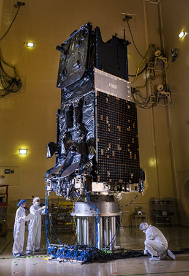
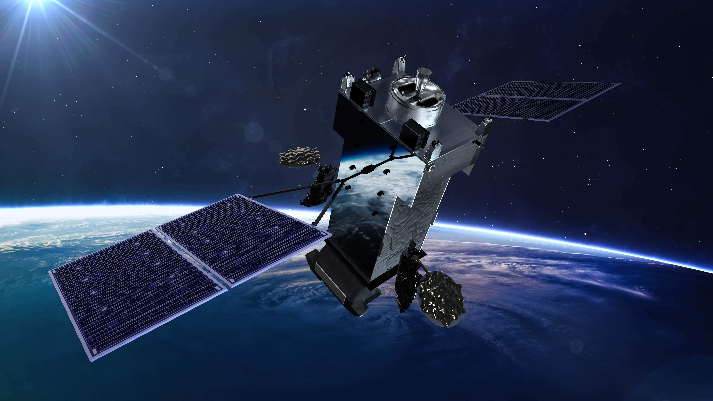

Lockheed Martin (LMT)
W kontekście: Fizyka orbitalna, orbity i operacje
Lockheed Martin wchodzi w temat orbitalnych centrów danych nie jako operator chmury, lecz jako integrator platform satelitarnych - tej warstwy sprzętu, która utrzymuje cokolwiek na orbicie i steruje tym przez lata. Trzonem oferty jest rodzina busów satelitarnych: flagowy LM 2100 (ewolucja platformy A2100, z 26 ulepszeniami względem poprzednika) o masie około 2 300 kg, mocy 20 kW i wymiarach 3,7 x 1,8 m, z ponad 30 statkami w zamówieniu lub produkcji (🔵 LM 2100 Insert PDF, bez daty). Obok niego mniejszy LM 400 obsługuje konstelacje w niższych orbitach, gdzie liczy się liczba egzemplarzy, a nie pojedyncza moc - to właśnie ten bus stoi za zamówieniami Space Development Agency: 42 satelity Tranche 1 Transport Layer (pierwsze 21 wystrzelone w październiku 2025), 36 satelitów Beta-variant Tranche 2 oraz 18 satelitów Tranche 3 Tracking Layer (🔵 F1, październik 2025).
Dla orbitalnego centrum danych kluczowy jest tu nie sam komputer, lecz zdolność platformy do utrzymania orientacji, zasilania i odprowadzania ciepła przez cały cykl życia - czyli to, co rozwija wątek Trade-off orbit: LEO vs SSO dawn-dusk vs MEO vs GEO. LM 2100 jest bazą dla misji geostacjonarnych (SBIRS GEO, Next Gen OPIR, GPS IIIF), gdzie satelita musi trwać kilkanaście lat bez serwisu, co bezpośrednio dotyka problemu Opór atmosferyczny (drag), station-keeping, napęd i paliwo. Konstelacyjne podejście SDA z kolei wpisuje się w logikę Formation flying / utrzymanie szyku konstelacji. Heritage jest tu argumentem fizycznym, nie tylko marketingowym: ponad 800 zbudowanych statków kosmicznych i około 1 500 lat łącznej pracy na orbicie (🔵 F1, bez daty) to skumulowana wiedza o tym, jak sprzęt zachowuje się w próżni i radiacji.
Materiały spółki
Grafiki z materiałów spółki / IR (prawa właściciela, użycie redakcyjne). Pełny rejestr:
Spolki/assets/_licencje.json.

SBIRS GEO-6 - satelita na LM2100 Combat Bus podczas testu akustycznego. Źródło: www.lockheedmartin.com; licencja: materiały spółki / IR - prawa właściciela, użycie redakcyjne.

Next Gen GEO (OPIR) - satelita wczesnego ostrzegania przed rakietami na LM 2100 Combat Bus. Źródło: www.lockheedmartin.com; licencja: materiały spółki / IR - prawa właściciela, użycie redakcyjne.

SDA Tracking / Transport Layer - konstelacja oparta na busie LM 400. Źródło: www.lockheedmartin.com; licencja: materiały spółki / IR - prawa właściciela, użycie redakcyjne.
W kontekście: Niezawodność, serwisowanie i cykl życia sprzętu
Największym problemem orbitalnego centrum danych jest to, że sprzętu na orbicie nie da się odświeżyć tak, jak wymienia się serwery w naziemnej serwerowni - to napięcie opisuje wątek Cykl odświeżania GPU (~3-5 lat na Ziemi) a nieserwisowalna orbita ("frozen hardware"). Lockheed Martin adresuje ten problem od strony, która rzadko jest widoczna w prezentacjach o chmurze: serwisowania on-orbit. NASA wybrała LMT do demonstracji technologii łączenia i inspekcji komponentów w przestrzeni kosmicznej (in-space component joining and inspection), a spółka rozwija kompetencje robotyczne we współpracy z NASA i DARPA (🔵 Aerospace Testing International, 2024). To bezpośrednio dotyka wątku Brak napraw in-situ a robotyczna obsługa (Northrop Grumman MEV i następcy) - tyle że LMT idzie w stronę montażu i naprawy, a nie tylko holowania.
Doświadczenie z długożyciowymi busami GEO przekłada się na zarządzanie awariami i kontrolowaną degradację na orbicie, co rozwija temat Redundancja N+1, degradacja kontrolowana, brak hot-swap; zarządzanie awariami nodów. Granica tego podejścia jest jednak twarda: nawet najlepsza obsługa robotyczna nie pokona prawa Moore'a, co opisuje Starzenie technologiczne (prawo Moore'a) szybsze niż żywotność platformy - problem ekonomiczny. Sygnałem ostrzegawczym jest tu anulowanie przez NASA programu OSAM-1 w 2024 roku - powodem były koszty i brak partnera, co pokazuje, że rynek serwisowania orbitalnego wciąż nie ma stabilnego modelu biznesowego (🔵 F1, 2024).
Dla inwestora: kompetencje LMT w serwisowaniu on-orbit są realne, ale komercyjnie niedojrzałe - to opcja na przyszłość finansowana głównie z budżetów agencji, nie samodzielne źródło przychodu.
W kontekście: Ekonomika i koszty całkowite (TCO)
W rachunku TCO orbitalnego centrum danych Lockheed Martin pojawia się po stronie kosztu wyniesienia, a nie samej platformy obliczeniowej. Spółka jest współwłaścicielem (50%) joint venture United Launch Alliance razem z Boeingiem, czyli ma bezpośredni udział w tej składowej rachunku, którą opisuje wątek Aktualny koszt wyniesienia: ile naprawdę kosztuje kilogram na orbicie. To jednocześnie źródło ryzyka: spadek kosztu kilograma na orbicie napędzany przez SpaceX i Rocket Lab podkopuje pozycję ULA, a opóźnienia lub rentowność rakiety Vulcan mogą ograniczyć korzyści LMT z tańszych startów dla własnych satelitów SDA i małych platform (🔵 F1, bez daty). Jest to dokładnie ta zmienna, która rozstrzyga tezę z wątku Weryfikacja tezy "orbitalne co najmniej 2x droższe niż naziemne".
Po stronie samego sprzętu LMT wnosi znaną masę per moc: bus LM 2100 dostarcza 20 kW przy masie około 2 300 kg (🔵 LM 2100 Insert PDF, bez daty), co jest punktem odniesienia dla rachunku z wątku Masa per MW, CAPEX i OPEX: z czego składa się rachunek. Skala produkcji - ponad 30 busów LM 2100 w toku oraz dziesiątki satelitów SDA na LM 400 - sprzyja efektowi uczenia opisanemu w Krzywa kosztu vs skala i learning curve. Przejęcie Terran Orbital w październiku 2024 za 314 mln USD (🔵 F1, październik 2024) wzmacnia tu zdolność do taniej, seryjnej produkcji małych satelitów.
Pozycja rynkowa
Lockheed Martin to amerykański koncern obronny i aerospace z czterema segmentami: Aeronautics, Missiles and Fire Control, Rotary and Mission Systems oraz Space. W FY2024 (rok zakończony 31.12.2024) sprzedaż wyniosła 71 043 mln USD (+5% r/r), z czego segment Space 12 479 mln USD - czyli około 17,6% całkowitej sprzedaży (🔵 Annual Report 2024). Backlog na koniec 2024 roku sięgnął 176 040 mln USD. W Q1 2025 (zakończony 30.03.2025) sprzedaż wyniosła 17 963 mln USD (+4% r/r), a Space 3 205 mln USD (-2% r/r), przy backlogu 172 974 mln USD i marży operacyjnej segmentów 11,6% (🔵 Q1 2025 IR release).
Trzeba jednak jasno powiedzieć: nisza orbitalnych centrów danych to ułamek tego konglomeratu. Sam segment Space stanowi około 17,6% przychodów, a w jego obrębie komercyjna i międzynarodowa sprzedaż satelitarna jest opisywana jako "not material". Udział ściśle rozumianej niszy (busy, serwisowanie on-orbit, małe satelity poza programami rządowymi) jest NIE UJAWNIONE, a szacunek wskazuje na poziom marginalny, poniżej 1% całkowitych przychodów (🔵 F1, FY2024).
W tym wąskim wycinku LMT jest mimo to jednym z czołowych dostawców busów satelitarnych i systemów kosmicznych, szczególnie w segmencie geostacjonarnym i wojskowym. Główni konkurenci to Northrop Grumman (busy oraz robotyczne pojazdy MEV do przedłużania życia satelitów), Boeing (systemy satelitarne, jednocześnie partner w ULA) oraz europejscy gracze Airbus Defence and Space i Thales Alenia Space. LMT różnicuje się głębią heritage GEO i integracją busów z naziemnymi systemami danych oraz misjami klasyfikowanymi, co tworzy wysokie bariery wejścia.
Dla inwestora: ekspozycja LMT na orbitalne centra danych jest dziś bardziej opcją technologiczną niż linią przychodu - sprzedaż konglomeratu zależy od programów obronnych, nie od tej niszy.
Ryzyka
Pierwszym i najważniejszym ryzykiem jest zależność od budżetu rządu USA: w 2024 roku 73% przychodów pochodziło od rządu amerykańskiego (🔵 F1, 2024). Nisze istotne dla orbitalnych centrów danych - kontrakty SDA, serwisowanie on-orbit, małe satelity - są w dużej mierze finansowane przez agencje rządowe. Mechanizm jest bezpośredni: cięcia lub opóźnienia programów przekładają się wprost na uszczuplenie pipeline. Pokazało to anulowanie programu OSAM-1 przez NASA w 2024 roku z powodu kosztów i braku partnera.
Drugie ryzyko jest technologiczne i dotyczy serwisowania on-orbit oraz braku standardów. Autonomiczne cumowanie, manipulacja i tankowanie satelitów nieprzystosowanych do obsługi wymaga sub-milimetrowej precyzji, a brak powszechnych interfejsów serwisowych opóźnia komercjalizację i podnosi koszt każdej demonstracji - co odsuwa moment, w którym ta kompetencja zacznie generować przychód.
Trzecie ryzyko to konkurencja w usługach startowych. Spadający koszt kilograma na orbitę napędzany przez SpaceX i Rocket Lab (Electron, Neutron) zmniejsza presję cenową na ULA, joint venture w którym LMT ma 50% udziału wspólnie z Boeingiem. Opóźnienia lub słaba rentowność rakiety Vulcan mogą ograniczyć korzyści LMT z tańszych startów dla własnych satelitów SDA i małych platform.
Powiązane spółki
Inne notowane spółki z raportu dzielące z tą firmą co najmniej jeden wątek tematyczny (wspólny rynek, technologia lub łańcuch wartości).
- Rocket Lab Corporation (RKLB) - Launch (Electron/Neutron) + Space Systems: bus, ogniwa SolAero, komponenty
Wspólne wątki: Fizyka orbitalna; Niezawodność i serwisowanie; Ekonomika i TCO. - Airbus SE (AIR) - PV (Sparkwing), optyka (Tesat), busy, serwis (EU)
Wspólne wątki: Fizyka orbitalna; Niezawodność i serwisowanie. - MDA Space Ltd. (MDA) - Robotyka kosmiczna (Canadarm), busy, anteny
Wspólne wątki: Fizyka orbitalna; Niezawodność i serwisowanie. - Northrop Grumman Corporation (NOC) - Serwis GEO (MEV/MRV), busy, radiatory, ogniwa
Wspólne wątki: Fizyka orbitalna; Niezawodność i serwisowanie. - Redwire Corporation (RDW) - Panele ROSA, struktury rozkładane, montaż on-orbit, radiatory Q-Rad
Wspólne wątki: Fizyka orbitalna; Niezawodność i serwisowanie. - Voyager Technologies, Inc. (VOYG) - Stacje kosmiczne (Starlab), systemy kosmiczne i obronne
Wspólne wątki: Fizyka orbitalna; Niezawodność i serwisowanie. - Astroscale Holdings Inc. (186A) - Pure-play serwisowanie i usuwanie śmieci (ADR)
Wspólne wątki: Niezawodność i serwisowanie. - RTX Corporation (RTX) - ADCS (Blue Canyon), termika (Collins Aerospace)
Wspólne wątki: Fizyka orbitalna.
Zrodla
- 🔵 Lockheed Martin, Annual Report 2024 (FY2024, dane finansowe i segmentowe): https://www.lockheedmartin.com/content/dam/lockheed-martin/eo/documents/annual-reports/lockheed-martin-annual-report-2024.pdf
- 🔵 Lockheed Martin, Q1 2025 IR release (wyniki za I kw. 2025): https://investors.lockheedmartin.com/news-releases/news-release-details/lockheed-martin-reports-first-quarter-2025-financial-results
- 🔵 Lockheed Martin, LM 2100 Insert PDF (parametry busa): https://www.lockheedmartin.com/content/dam/lockheed-martin/space/documents/satellite/LM2100-Insert.pdf
- 🔵 Lockheed Martin, Space Technology Trends feature (heritage, trendy): https://www.lockheedmartin.com/en-us/news/features/2026/space-technology-trends-shaping-the-future.html
- 🟠 Aerospace Testing International, "Made in space" (serwisowanie i laczenie on-orbit): https://www.aerospacetestinginternational.com/features/made-in-space.html
- 🔵 Lockheed Martin, Ground Data Systems (ogloszenie - systemy naziemne): https://www.lockheedmartinjobs.com/job/littleton/ground-data-software-engineer/694/94328147152
Linkują tutaj
13 powiązanych notatek
- Mapa raportu Orbitalne / kosmiczne centra danych
- Sekcja Fizyka orbitalna, orbity i operacje
- Sekcja Niezawodność, serwisowanie i cykl życia sprzętu
- Sekcja Ekonomika i koszty całkowite (TCO)
- Sekcja Bezpieczeństwo, geopolityka i realizm 10-letni
- Spółka Airbus (AIR)
- Spółka Astroscale (186A)
- Spółka MDA Space (MDA)
- Spółka Northrop Grumman (NOC)
- Spółka Redwire (RDW)
- Spółka Rocket Lab (RKLB)
- Spółka RTX (RTX)
- Spółka Voyager Technologies (VOYG)